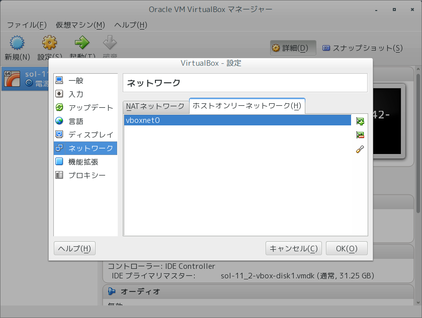
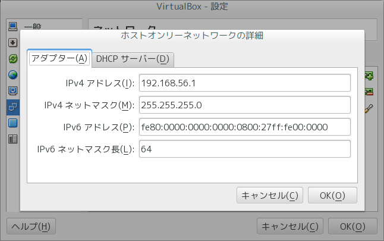
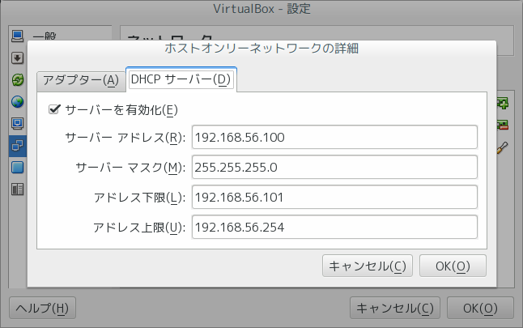
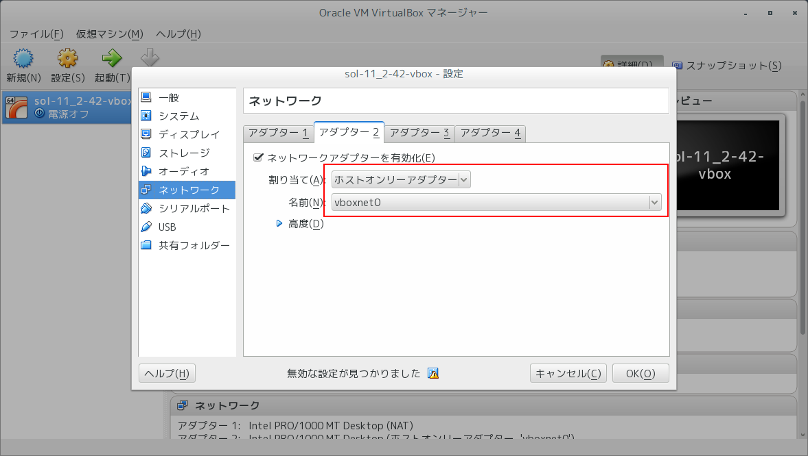

Table of Contents
VirtualBox上で動く仮想マシンにデフォルトではNATネットワークアダプタが割り当てられてい
るため、Host OSとの通信ができないです。これを回避するために ホストオンリーネットワー
ク アダプターを使えば回避できる。最近のバージョン追加手順が変わったため、メモしてお
きます。
1 VirtualBox使用出来るネットワークアダプタ
- NAT VirtualBox のデフォルト設定。ゲスト OS からインターネットは繋がる。 ゲスト OS とホストOS 間は繋がらない。
- ブリッジネットワーク ゲスト OS のネットワークがホスト OS と同じネットワークに繋がる。イン ターネットに繋がり、ゲスト OS とホスト OS の間が繋がる。同じネットワー ク上の他の PC からも見える。
- 内部ネットワーク 仮想マシンを複数起動したときに、各マシン間を繋ぐためのネットワーク？
- ホストオンリーネットワーク ホスト OS と ゲスト OS 間のネットワーク。ゲスト OS をローカルのウェ ブサービス開発環境として利用する場合、次のようなネットワークだと都合 が良いです。
2 複数アダプターユースケース
アダプタ ２ に「ホストオンリーネットワーク」を割り当て、アダプ タ １に「NAT」を割り当てます。こうすると、ホスト OS とゲスト OS 間が繋 がり、NAT によりゲスト OS から外部ネットへのアクセスもきるようになります。
3 ホストオンリーネットワークの追加手順
3.1 カーネルモジュールのロード
sudo modprobe vboxdrv sudo modprobe vboxnetadp sudo modprobe vboxnetflt
3.2 ホストオンリーネットワークの追加
ホストと通信するための仮想ブリッジを追加するイメージとなります。またこのブリッジに対 してIPの指定やDHCPサーバ機能の有効化も可能です。VirtualBoxのグローバル設定ダイアログか らホストオンリーネットワークを追加する。
- ホストオンリーネットワークの追加 
- ブリッジにIPを割り当てる 
- DHCPサーバを有効化する 
3.3 アダプターと紐付ける
仮想マシンのネットワークディバイス設定でアダプター２を有効化し、作成したホストオンリー ネットワークと紐付ける。 
仮想マシンを機能すると共に仮想ブリッジディバイスがホストOS上で自動的に生成されること を確認する。
$ ifconfig
★省略..........
vboxnet0: flags=4163<UP,BROADCAST,RUNNING,MULTICAST> mtu 1500
inet 192.168.56.1 netmask 255.255.255.0 broadcast 192.168.56.255
inet6 fe80::800:27ff:fe00:0 prefixlen 64 scopeid 0x20<link>
ether 0a:00:27:00:00:00 txqueuelen 1000 (Ethernet)
RX packets 0 bytes 0 (0.0 B)
RX errors 0 dropped 0 overruns 0 frame 0
TX packets 107 bytes 18000 (17.5 KiB)
TX errors 0 dropped 0 overruns 0 carrier 0 collisions 0